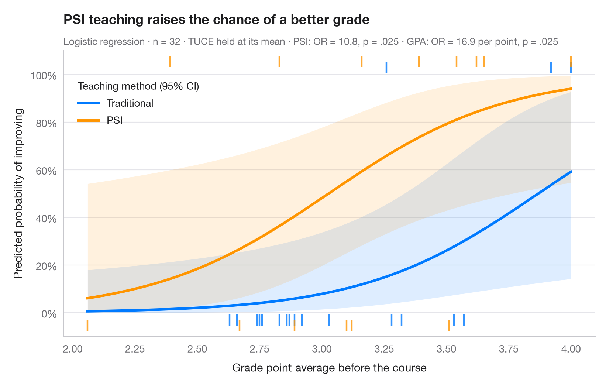

Predicted probabilities
Model-based probability curves with 95% CI ribbons across a predictor, by group.

Odds ratios are hard to feel; probabilities are not. This chart turns a logistic model back into the outcome scale: each curve is the predicted probability of success across the range of a continuous predictor, for one level of a factor, with the other covariates held at their mean. Ribbons are 95% confidence intervals computed on the logit scale and back-transformed, so they stay inside [0, 1]. Rugs show the observed students — at the top if they improved, at the bottom if they did not.
Data are Spector & Mazzeo's (1980) experiment bundled with statsmodels
(sm.datasets.spector): did a new teaching method (PSI) raise grades, given
prior GPA and a pre-test score (TUCE)? The model is a binomial smf.glm(); the
curves come from get_prediction().summary_frame().
import matplotlib.pyplot as plt
import numpy as np
import pandas as pd
import statsmodels.api as sm
import statsmodels.formula.api as smf
# Data: 32 students; GRADE = 1 if the grade improved after the course
df = sm.datasets.spector.load_pandas().data
model = smf.glm("GRADE ~ GPA + TUCE + C(PSI)", data=df, family=sm.families.Binomial()).fit()
# Prediction grid: GPA across its range, TUCE at its mean, both teaching methods
gpa = np.linspace(df.GPA.min(), df.GPA.max(), 200)
groups = {0: ("Traditional", "#007AFF"), 1: ("PSI", "#FF9500")}
fig, ax = plt.subplots(figsize=(8, 5))
for level, (name, c) in groups.items():
grid = pd.DataFrame({"GPA": gpa, "TUCE": df.TUCE.mean(), "PSI": level})
pred = model.get_prediction(grid).summary_frame(alpha=0.05)
ax.fill_between(gpa, pred.mean_ci_lower, pred.mean_ci_upper, color=c, alpha=0.13, lw=0)
ax.plot(gpa, pred["mean"], color=c, lw=2.5, label=name)
# Rug of observations: improved (top) or not (bottom), slightly offset per group
obs = df[df.PSI == level]
y_rug = np.where(obs.GRADE == 1, 1.03 + 0.025 * level, -0.03 - 0.025 * level)
ax.scatter(obs.GPA, y_rug, marker="|", s=110, lw=1.6, color=c, alpha=0.8, clip_on=False)
ax.legend(loc="upper left", title="Teaching method (95% CI)", alignment="left",
bbox_to_anchor=(0.01, 0.93))
ax.set_ylim(-0.1, 1.1)
ax.set_yticks(np.linspace(0, 1, 6), [f"{v:.0%}" for v in np.linspace(0, 1, 6)])
ax.set_xlabel("Grade point average before the course")
ax.set_ylabel("Predicted probability of improving")
ax.set_title("PSI teaching raises the chance of a better grade", pad=26)
psi = "C(PSI)[T.1.0]"
fmt_p = lambda p: f"{p:.3f}".lstrip("0")
ax.text(0, 1.02, f"Logistic regression · n = {int(model.nobs)} · TUCE held at its mean · "
f"PSI: OR = {np.exp(model.params[psi]):.1f}, p = {fmt_p(model.pvalues[psi])} · "
f"GPA: OR = {np.exp(model.params['GPA']):.1f} per point, p = {fmt_p(model.pvalues['GPA'])}",
transform=ax.transAxes, fontsize=9.5, color="#6E6E73")
plt.show()
Figures use the optional Statlas style: add plt.style.use("statlas.mplstyle") to match the look exactly.
More in Regression models

Coefficient plot
Regression estimates with 95% confidence intervals, one row per term.
ggstats::ggcoef_model()
Odds-ratio forest plot
Logistic regression odds ratios on a log scale, with a table of OR [95% CI] alongside.
ggstats::ggcoef_model(exponentiate = TRUE)
Comparing nested models
Coefficients of three nested regressions side by side, to see how estimates shift.
ggstats::ggcoef_compare()